Yves Henri Donat Mathieu-Saint-Laurent 이브 앙리 도나 마티외생로랑

생 로랑은 1936년 8월 1일, 프랑스에서 태어났다. 10대 초반까지 어머니와 누이들을 위한 드레스를 디자인하기도 하며 어린 시절부터 남다른 재능을 보이며 성장했다. 1957년 21세의 나이에 파리 최대 오트 쿠튀르 하우스인 크리스티앙 디오르(크리스찬 디올, Christian Dior)의 수석 디자이너로 혜성과 같이 패션계에 등장한 이래, 2002년 65세의 나이로 은퇴할 때까지 혁명적이고 독창적인 작품으로 20세기 후반 패션을 이끌었다.